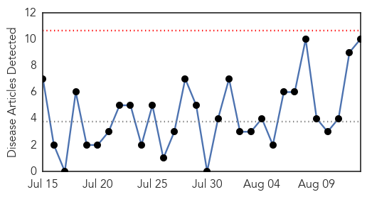

West Nile Virus
30-Day Web Trend
0 alerts, 0 warnings

30-Day Twitter Trend
0 alerts, 0 warnings

Article Locations

Article Confidences

Top Articles:
- 0.998
- West Nile virus contributes to Montgomery County man's death
- 0.993
- Eighth West Nile case, first death reported in Montgomery County
- 0.992
- One new case of chikungunya virus identified; resident dies of West Nile
- 0.969
- Greece reports first West Nile virus case this year
- 0.913
- Yazoo County resident dies from West Nile virus
- 0.860
- West Nile Virus in Utah County
- 0.856
- Connecticut having mild mosquito season so far
- 0.713
- Health Officials: Take steps to avoid West Nile
- 0.596
- West Nile worries worsen, new virus details kept secret
- 0.550
- County to overstep city, spray for mosquitoes
Top Tweets:
-
No tweets found for Aug 13, 2014
Pertussis
30-Day Web Trend
0 alerts, 0 warnings

30-Day Twitter Trend
0 alerts, 0 warnings

Article Locations

Article Confidences

Top Articles:
- 0.857
- 2014 is record year for pertussis cases in San Diego County
- 0.770
- Dept. of Health: Adults need to get vaccinated, too
- 0.741
- Montclair Health Department Offering Vaccinations for Tweens and Teens - Barista Kids
- 0.727
- NY State Physicians and Public Health Officials Launch "IMMUNIZE NY"
- 0.688
- Md. requires new shots for kindergarten, 7th grade
- 0.678
- Idaho reports alarming rise in whooping cough cases
- 0.650
- Idaho Sees Alarming Rise In Whooping Cough Cases
- 0.603
- Three more vaccines required for Durham students
- 0.574
- Coeur d'Alene Press: Local News
- 0.569
- Whooping cough alert: Bathurst parents left to fend for themselves
Top Tweets:
-
No tweets found for Aug 13, 2014